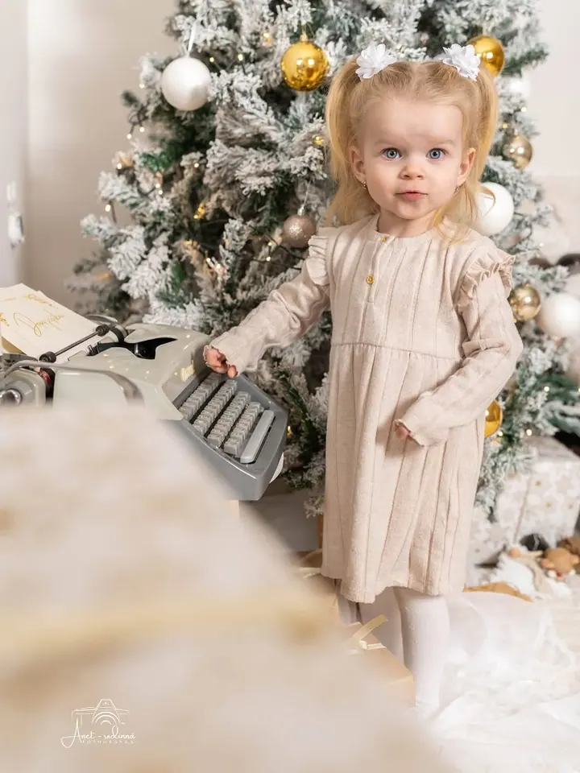
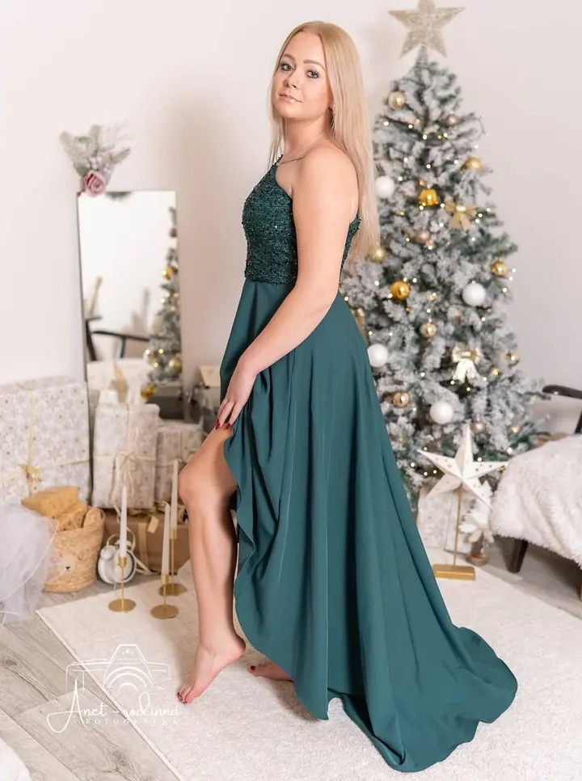
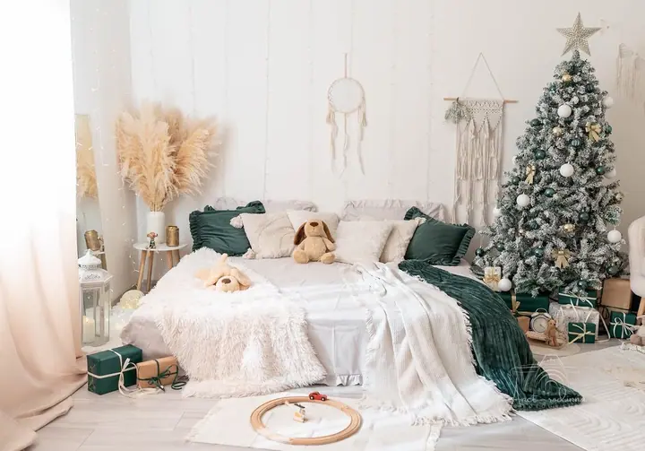

Rodinné focení
Fotím rodiny, děti i miminka venku v Kladně a okolí nebo v mém ateliéru. Pózovat umět nemusíte, nechám vás být sami sebou a jemně vás provedu.

Jmenuji se Aneta Bendlová a jsem rodinná fotografka z Kladna a maminka dvou dětí. Fotím rodiny, děti, miminka i těhotné maminky, venku i v mém ateliéru. Nejraději zachyc…
Rezervovat termínFotografie je mou vášní už od roku 2014. Jsem maminka dvou dětí, a tak dobře vím, jak rychle to období, kdy jsou děti malé, uteče. Proto fotím opravdové emoce a přirozené chvíle, ke kterým se budete rádi vracet i za mnoho let.


Nemusíte umět pózovat ani se před objektivem cítit přirozeně. Během focení vás nechám být sami sebou a jemně vás provedu. Od října 2025 mám v Kladně vlastní ateliér, kde vás fotím v příjemném a klidném prostředí, a ráda vyrazím i ven do okolí.
Od ledna 2026 také zaplétám copánky. Začalo to nevinně, copánky jsem pletla své dceři, pak se začaly líbit i ostatním. Ať už se potkáme při focení, nebo při zaplétání, chci, abyste odcházeli spokojení a s úsměvem.
Co fotím
Fotím rodiny, děti i miminka venku v Kladně a okolí nebo v mém ateliéru. Pózovat umět nemusíte, nechám vás být sami sebou a jemně vás provedu.
Od října 2025 mám vlastní ateliér, kde fotím v příjemném a klidném prostředí. Teď pro vás chystám vánoční focení 2026 se stromečky a dekorací.
Narozeninové focení dětí v ateliéru, s balónky, číslicí a dortíkem. Vzpomínka na rok, kdy byly děti ještě malé.
Fotky z období, kdy čekáte miminko. Fotím venku i v ateliéru, v klidu a bez spěchu.
Postup
Ozvěte se mi telefonicky, e-mailem nebo přes kontaktní formulář. Fotím v pracovní dny, po domluvě i o víkendu.
Podle balíčku, který si vyberete, vám pošlu e-mailem podrobnější informace, jak se na focení připravit.
Potkáme se venku nebo v mém ateliéru v Kladně. Nechám vás být sami sebou a jemně vás provedu.
Do 7 dní vám pošlu náhledy v galerii chráněné heslem. Hotové fotky dostanete do 14 dnů od vašeho výběru, barevně i černobíle.
Otázky
Vůbec ne. Nemusíte se před objektivem cítit přirozeně, nechám vás být sami sebou a během focení vás jemně provedu.
V Kladně a okolí, venku v přírodě nebo v mém ateliéru, který mám od října 2025.
Náhledy do 7 dní od focení. Svůj výběr mi pošlete do 14 dní a hotové upravené fotky dostanete do 14 dnů od výběru, v barevné i černobílé verzi a ve vysokém rozlišení.
Ano. Pro sezónu 2026 mám tři balíčky, od balíčku Mini za 12 000 Kč po balíček Extra za 23 000 Kč. Termín si můžete rezervovat na tel. 777 626 037.